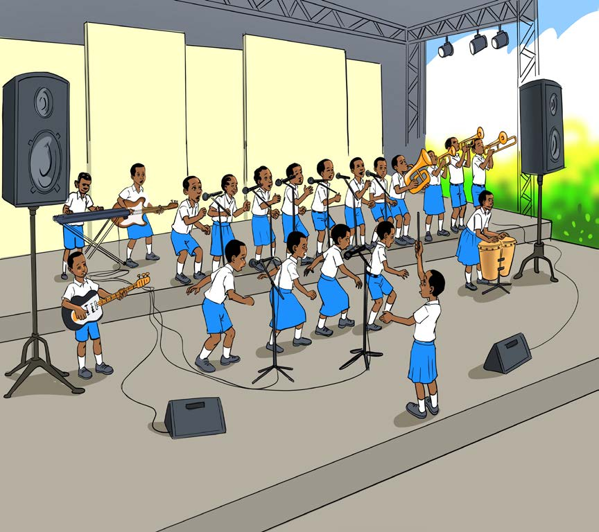

sauti nzuri za waimbaji na ala za muziki. Pia, hufurahia ujumbe wa nyimbo mbalimbali. Kielelezo namba 2 kinaonesha waimbaji wakifanya onesho la jukwaani.

Mambo ya kuzingatia wakati wa kushiriki maonesho ya uimbaji
Wakati wa kushiriki katika maonesho ya uimbaji ni vema kuzingatia mambo yafuatayo:
68